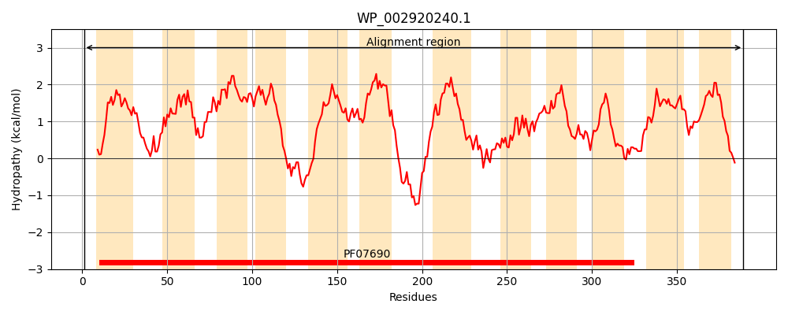
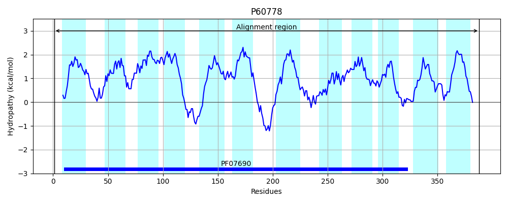
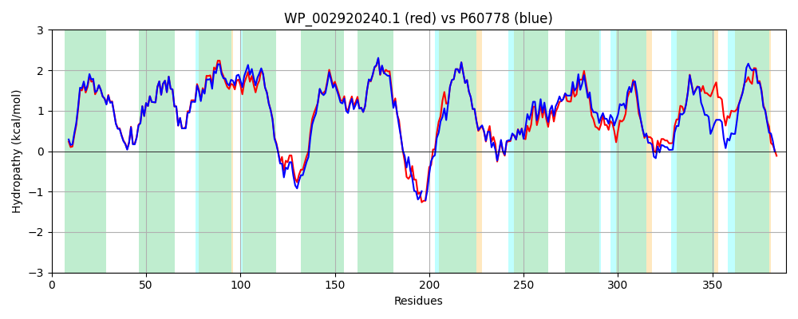

Hit Accession: P60778
Hit TCID: 2.A.1.7.14
Hit Description: gnl|BL_ORD_ID|11130 gnl|TC-DB|P60778|2.A.1.7.14 Protein tsgA OS=Escherichia coli (strain K12) GN=tsgA PE=1 SV=1
Mach Len: 389
e:0.000000
Query TMS Count : 12
Hit TMS Count: 12
TMS-Overlap Score: 11.750000
Predicted Substrates:None
BLAST Alignment:
Score: 1758 , Bit scores: 681 bits, E-value: 0.0e+00, Alignment length: 389, Percentage identity: 87
Query: 1 MTNSNRIKLTWISFFSYALTGALVIVTGMVMGNIADYFHLPVSSMSNTFTFLNAGILISIFLNAWLMEIVPLKTQLRFGFILMVLAVAGLMLSHSLALFSASMFVLGLVSGITMSIGTFLITHMYEGRQRGARLLFTDSFFSMAGMIFPMVAAVLLARSIEWYWVYACIGLVYVAIFVLTFGCDFPVLGKKAQSENSQPVVKEKWGIGVLFLSVAALCYILGQLGFISWVPEYAKSLGMSLGDAGKLVSDFWMSYMIGMWSFSFILRFFDLQRILTVLAGLATVLMYLFINGSPEHMPWFILTLGFFSSAIYTSIITLGSQQTRVASPKLVNFILTCGTIGTMLTFVVTGPIVAASGPLAALHTANGLYAVVFVMCFILGFVSRHRQNN 389
MTNSNRIKLTWISF SYALTGALVIVTGMVMGNIADYF+LPVSSMSNTFTFLNAGILISIFLNAWLMEIVPLKTQLRFGF+LMVLAVAGLM SHSLALFSA+MF+LG+VSGITMSIGTFL+T MYEGRQRG+RLLFTDSFFSMAGMIFPM+AA LLARSIEWYWVYACIGLVYVAIF+LTFGC+FP LGK A ++ PV KEKWGIGVLFLSVAALCYILGQLGFISWVPEYAK LGMSL DAG LVS+FWMSYM+GMW+FSFILRFFDLQRILTVLAGLA +LMY+F G+P HM W IL LGFFSSAIYT+IITLGSQQT+V SPKLVNF+LTCGTIGTMLTFVVTGPIV SGP AAL TANGLYAVVFVMCF+LGFVSRHRQ+N
Sbjct: 1 MTNSNRIKLTWISFLSYALTGALVIVTGMVMGNIADYFNLPVSSMSNTFTFLNAGILISIFLNAWLMEIVPLKTQLRFGFLLMVLAVAGLMFSHSLALFSAAMFILGVVSGITMSIGTFLVTQMYEGRQRGSRLLFTDSFFSMAGMIFPMIAAFLLARSIEWYWVYACIGLVYVAIFILTFGCEFPALGKHAPKTDA-PVEKEKWGIGVLFLSVAALCYILGQLGFISWVPEYAKGLGMSLNDAGTLVSNFWMSYMVGMWAFSFILRFFDLQRILTVLAGLAAILMYVFNTGTPAHMAWSILALGFFSSAIYTTIITLGSQQTKVPSPKLVNFVLTCGTIGTMLTFVVTGPIVEHSGPQAALLTANGLYAVVFVMCFLLGFVSRHRQHN 388 | Protein Hydropathy Plots: |
|---|
|  |  |
Pairwise Alignment-Hydropathy Plot:
|
|---|
|  |